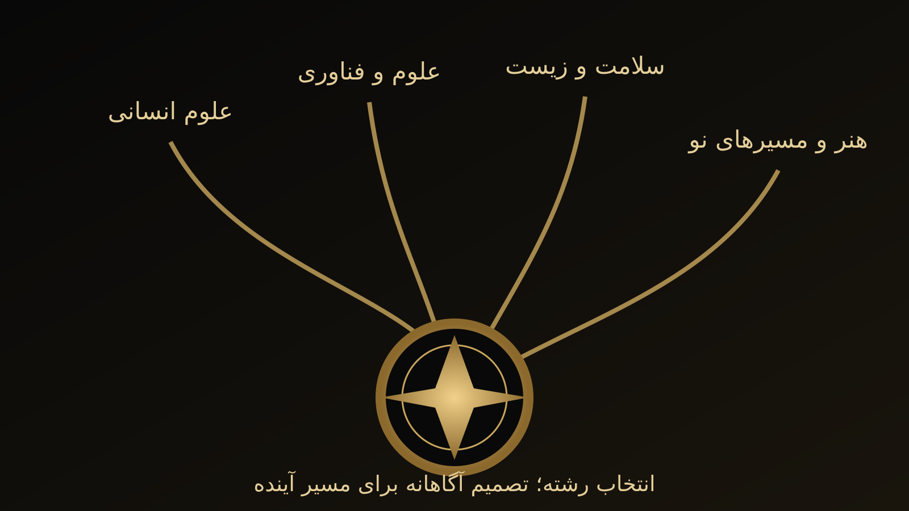

یادگیری و آموزش زبان
پژوهش درباره آموزش زبان انگلیسی، توانش زبانآموز، روانی و شواهد آموزشی.
مدرس دانشگاه · پژوهشگر · نویسنده · مشاور آموزشی
آموزش با انسان و قضاوت حرفهای در مرکز تصمیمگیری.
فعالیت من آموزش عالی، آموزش زبان، ارزیابی، مواد آموزشی، استعدادیابی و هدایت تحصیلی را به یکدیگر پیوند میدهد تا تصمیمهای آموزشی بر شواهد، بافت زندگی فرد و قضاوت حرفهای استوار شوند.

درباره من
دکتر جواد رضازاده یزدلی مدرس دانشگاه، پژوهشگر آموزش و مشاور آموزشی است. زبانشناسی کاربردی (Applied Linguistics) یکی از محورهای اصلی فعالیت علمی و حرفهای اوست و در کنار آموزش زبان، سنجش و ارزشیابی، برنامه و مواد آموزشی، پژوهشهای آمیخته، فناوری و هوش مصنوعی در آموزش، هدایت تحصیلی و استعدادیابی دنبال میشود.
برای من، این حوزهها مجموعهای از عنوانهای جداگانه نیستند؛ مسئله اصلی این است که شواهد چگونه در بافت واقعی زندگی و یادگیری انسان به قضاوت و تصمیمی مسئولانهتر تبدیل شوند.
فلسفه آموزشی دکتر رضازاده
متن فلسفه آموزشی دکتر جواد رضازاده یزدلی، برگرفته از کتاب «کشف مسیر طلایی استعداد»؛ درباره انسان، استعداد، تلاش، اخلاق، خانواده، معلم، مشاور و معنای واقعی یادگیری.
برنامه پژوهشی
پژوهش درباره آموزش زبان انگلیسی، توانش زبانآموز، روانی و شواهد آموزشی.
بررسی آمیخته تناسب فرهنگی و آموزشی مواد در بافت واقعی یادگیری.
پژوهش درباره کیفیت سنجش، تفسیر شواهد و تصمیمگیری مسئولانه آموزشی.
رویکردی پژوهشمحور به شناسایی و پرورش استعداد، بدون تقلیل انسان به یک نمره یا آزمون منفرد.
خدمات آموزشی و مشاورهای
مشاوره از مسئله واقعی فرد آغاز میشود: گاهی انتخاب رشته است، گاهی برنامه کنکور، گاهی فهم بهتر یک کارنامه و گاهی پرسشی بنیادیتر درباره استعداد و مسیر رشد. پاسخ قرار نیست برای همه یکسان باشد.
تحلیل وضعیت، هدفها و تصمیمهای آموزشی بر پایه شواهد و شرایط واقعی فرد.
02مقایسه مسئولانه گزینهها با توجه به رتبه، علاقه، توان، شرایط و آینده.
03شناخت چندمنبعی توانمندیها و ظرفیتهای رشد، فراتر از یک تست و یک برچسب.
04برنامهریزی، پایش عملکرد، مدیریت فشار و بازطراحی مسیر بدون وعدههای غیرواقعی.
05تبدیل عددها به پرسشهای آموزشی و تصمیمهای قابل استفاده.
06همراهی با خانواده برای حمایت از تصمیم فرزند، بدون مقایسه و فشار فرساینده.
اخبار، راهنماها و یادداشتها
اخبار و مطالب این بخش با همان منطق خدمات سایت نوشته میشوند: اطلاعات درست، توضیح کافی، پیوند با منبع رسمی در موضوعات سالمحور و پرهیز از نسخههای ساده برای مسئلههای پیچیده.

مشاوره تحصیلی
چرا مشاوره خوب باید قدرت تصمیمگیری فرد را افزایش دهد، نه اینکه جای او تصمیم بگیرد؟

انتخاب رشته ۱۴۰۵
رتبه، علاقه، توان، شرایط زندگی و اطلاعات رسمی چگونه کنار هم قرار میگیرند؟

فراخوان علمی
دعوت از پژوهشگران و اعضای هیئت علمی برای شبکه داوری و همکاری علمی مؤسس.
ارتباط